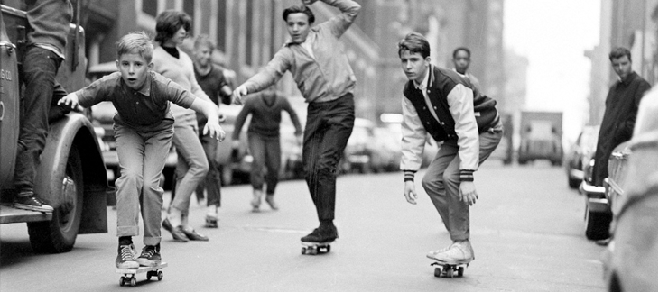

SKATEBOARD:
Mucho más que una tabla con ruedas
Nacido en las calles y alimentado por la creatividad, el skateboard es más que un deporte: es una forma de vida. Desde sus inicios en la California de los años 50 hasta su presencia en los Juegos Olímpicos, el skate ha conquistado el asfalto, los parques y el corazón de generaciones enteras. Una mezcla de libertad, estilo y rebeldía que sigue rodando con fuerza en todo el mundo.
